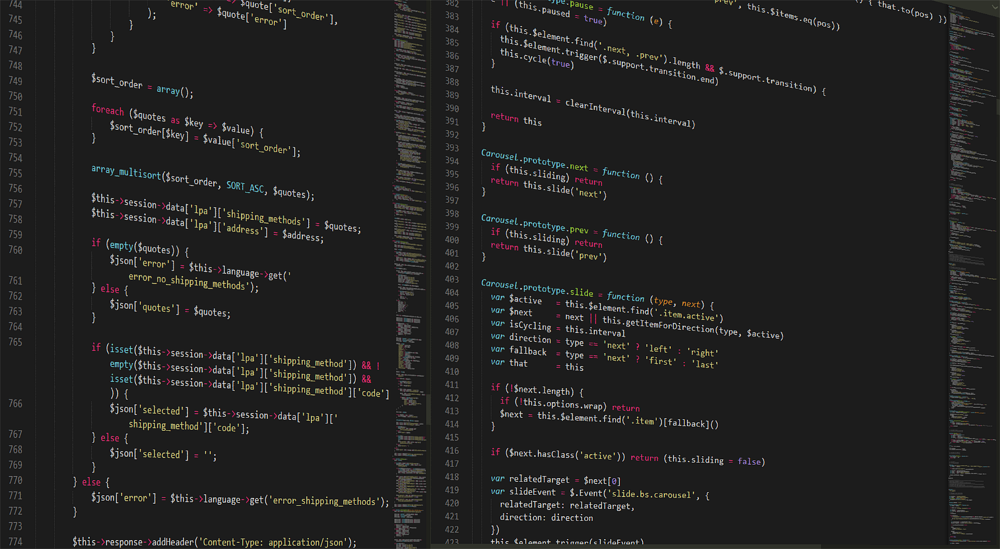
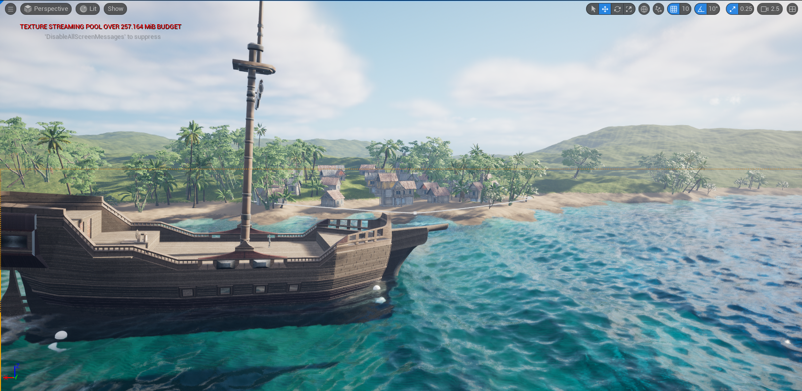
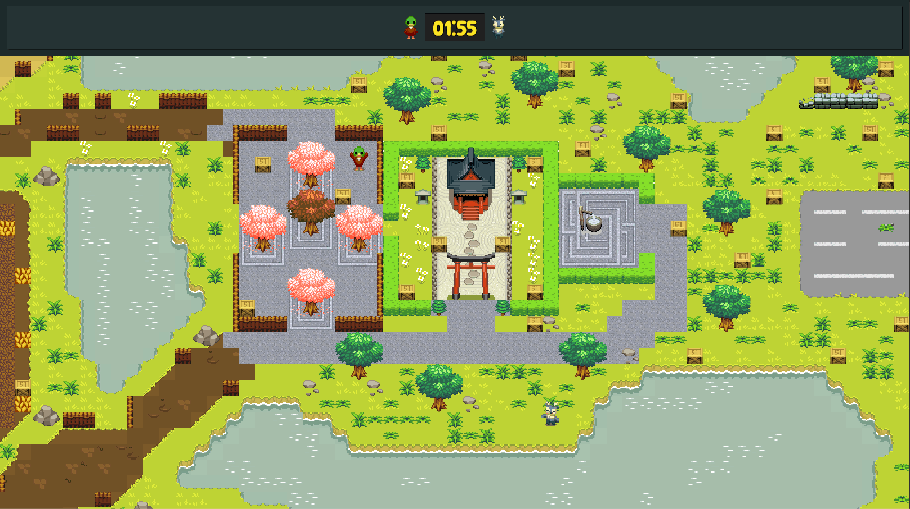
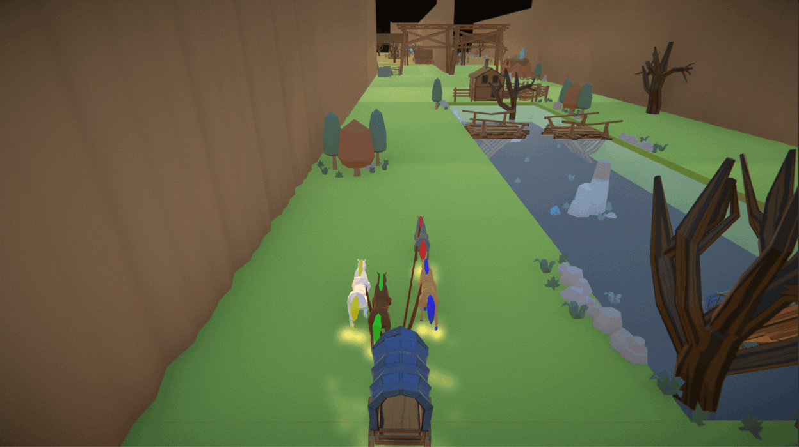
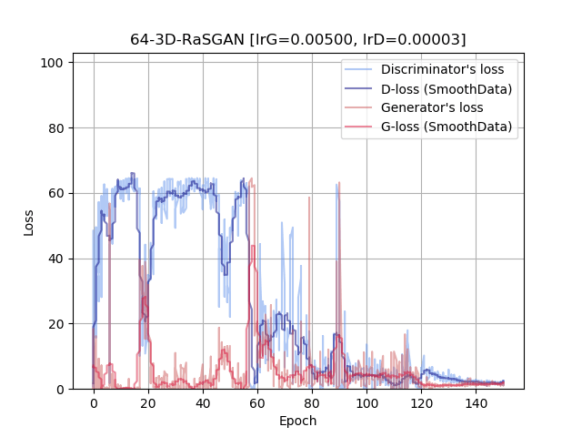
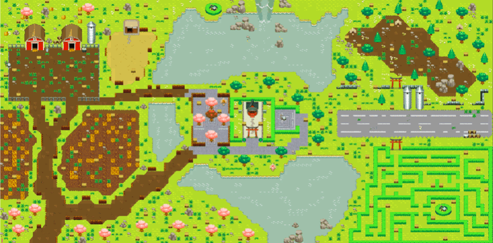
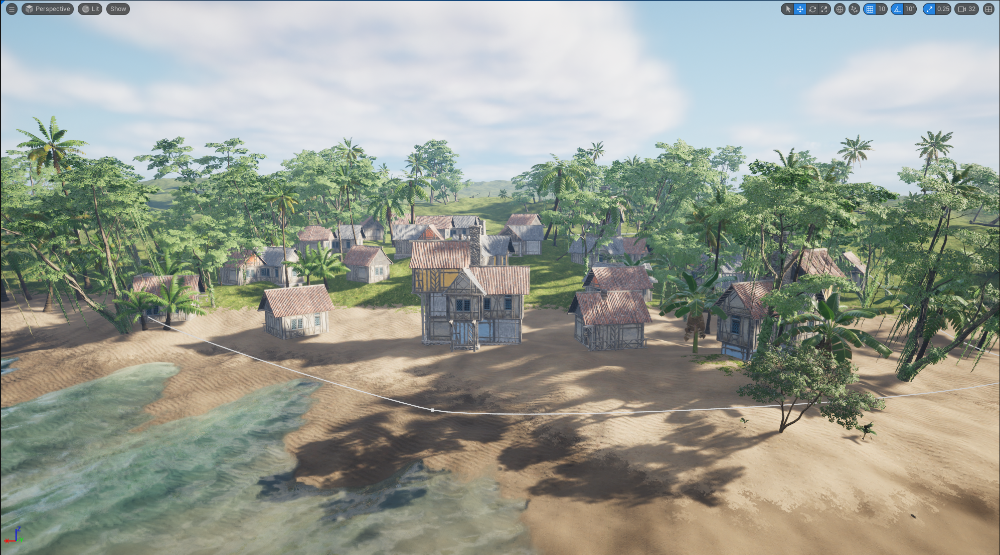
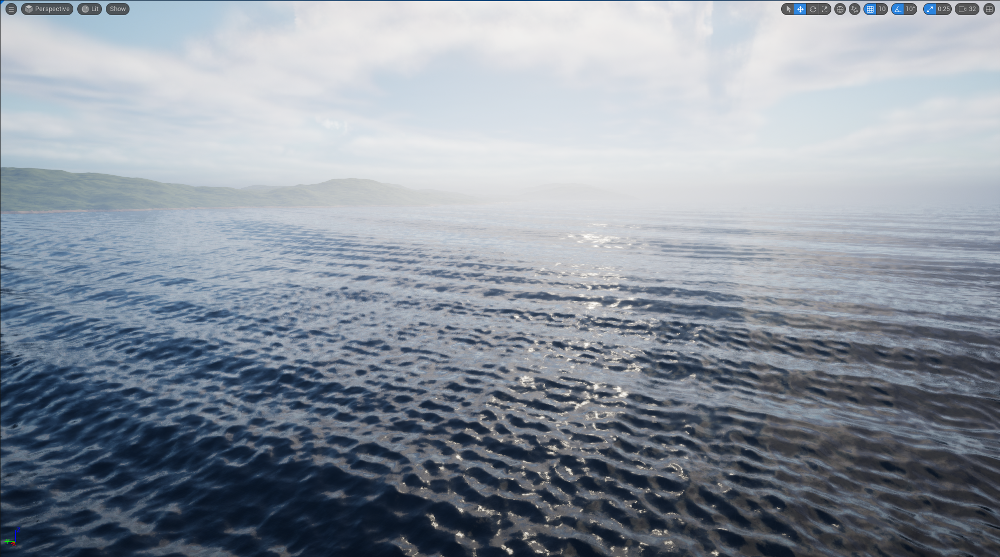

Bryce Newell
Software Engineer and Game Developer
View My WorkAbout Me
Software Engineer and Game Developer
I'm Bryce Newell, a passionate Software Engineer and Game Developer with a knack for creating immersive digital experiences and robust software solutions. My journey in the tech world has been driven by a relentless curiosity and a desire to build impactful applications, from high-performance game engines to scalable web services.
With a strong foundation in C++, C#, Python, and JavaScript, I thrive in environments that challenge me to learn and adapt. I specialize in real-time graphics, physics simulations, and crafting intuitive user interfaces. My experience spans across various domains, including game development with Unity and Unreal Engine, full-stack web development, and backend system design.
I believe in clean code, efficient algorithms, and collaborative problem-solving. Whether it's optimizing rendering pipelines, designing complex data structures, or bringing a game concept to life, I am committed to delivering high-quality results.
Contact Me
Skills & Tech Stack
JavaScript
Dynamic web applications and interactive frontends.
React
Modern, component-based user interfaces.
Python
Backend development, data analysis, and scripting.
Unity
Cross-platform game development and interactive experiences.
Unreal Engine
High-fidelity game development and procedural content generation.
C#
Robust application development and game logic.
C++
High-performance systems and real-time graphics.
DirectX 11
Low-level graphics programming and 3D application development.
HLSL
Custom shader development for realistic rendering.
Deep Learning
Neural networks, generative models, and AI applications.
TensorFlow
Machine learning framework for model training and deployment.
TensorLayer
Simplified deep learning library built on TensorFlow.
Projects
Procedural Pirates

A fully procedural open-world pirate game built in Unreal Engine 5.4, featuring dynamic terrain, realistic Gerstner waves, and spline-based town generation.
Kachiku 64

A 64-player local co-op party game inspired by Bomberman, developed by a large team, focusing on dynamic bomb interactions and evolving battle arenas.
Country Roads

A game jam project where you play as a horse pulling a cart through a procedurally generated Wild West map, making choices to find your way home.
DirectX11 Procedural Buildings

A C++ tool built from scratch using DirectX 11 to procedurally generate and export 3D building models based on user input.
GAN

An implementation of a 3D Generative Adversarial Network (GAN) using TensorFlow to generate game-ready 3D car models from a dataset.
SEA

Developed defense and training software projects, including VR/AR applications and an in-house IDE, demonstrating versatility across multiple technologies and platforms.
Library

A digital library management system for organizing and accessing various resources.